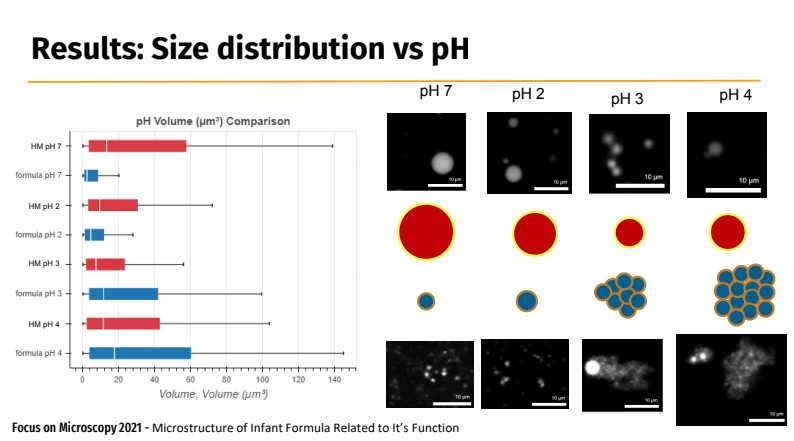

Big Data seaborn Solution
Contents
Big Data seaborn Solution#
Big Data definition#
Big Data - files that are complicated to process using conventional computer or software.
Example#
Table with more than 1,048,576 rows would be impossible to process in MS Excel. Python, R and MatLab are limited by RAM and memory.
Solution#
Use specialized environment as Metacentrum computers, specialized servers (Mazlík) or Google Collab!
Practical example#
Goal#
Load both data sets
Clear NaN values
Visualize Area distribution
Decide statistical distribution (parametric/nonparametric)
Define statistic hypothesis
Compare Area distributions
Expected results from 3D measurements#

!pip install -q -r requirements.txt
^C
import numpy as np
import pandas as pd
import seaborn as sns
import matplotlib
data1Path = "Dataset/Results_MM.csv" #@param {type:"string"}
data1=pd.read_csv(data1Path)
data1.head()
| Label | Area | Mean | StdDev | Mode | Min | Max | X | Y | ... | %Area | RawIntDen | Slice | FeretX | FeretY | FeretAngle | MinFeret | AR | Round | Solidity | ||
|---|---|---|---|---|---|---|---|---|---|---|---|---|---|---|---|---|---|---|---|---|---|
| 0 | 1 | Data1 | 2541 | 56.0 | 0.0 | 56 | 56 | 56 | 598.54486 | 170.83176 | ... | 100 | 142296.0 | 1 | 593 | 142 | 98.53077 | 55.75403 | 1.06228 | 0.94137 | 0.97319 |
| 1 | 2 | Data1 | 2419 | 96.0 | 0.0 | 96 | 96 | 96 | 2718.95432 | 624.50827 | ... | 100 | 232224.0 | 1 | 2711 | 653 | 72.47443 | 52.97387 | 1.10986 | 0.90102 | 0.97032 |
| 2 | 3 | Data1 | 1855 | 4.0 | 0.0 | 4 | 4 | 4 | 237.42237 | 661.82938 | ... | 100 | 7420.0 | 1 | 224 | 683 | 56.30993 | 48.00000 | 1.03663 | 0.96466 | 0.96867 |
| 3 | 4 | Data1 | 2596 | 65.0 | 0.0 | 65 | 65 | 65 | 293.91371 | 820.11710 | ... | 100 | 168740.0 | 1 | 266 | 807 | 163.66396 | 56.02472 | 1.05496 | 0.94790 | 0.97320 |
| 4 | 5 | Data1 | 1409 | 31.0 | 0.0 | 31 | 31 | 31 | 2998.58375 | 1046.93364 | ... | 100 | 43679.0 | 1 | 2989 | 1068 | 68.42869 | 39.00000 | 1.15185 | 0.86817 | 0.96739 |
5 rows × 36 columns
data1.describe()
C:\Users\schatzm\Anaconda3\envs\julab\lib\site-packages\numpy\lib\function_base.py:4527: RuntimeWarning: invalid value encountered in subtract
diff_b_a = subtract(b, a)
| Area | Mean | StdDev | Mode | Min | Max | X | Y | XM | ... | %Area | RawIntDen | Slice | FeretX | FeretY | FeretAngle | MinFeret | AR | Round | Solidity | ||
|---|---|---|---|---|---|---|---|---|---|---|---|---|---|---|---|---|---|---|---|---|---|
| count | 1.615323e+06 | 1.615323e+06 | 1.615323e+06 | 1.615323e+06 | 1.615323e+06 | 1.615323e+06 | 1.615323e+06 | 1.615323e+06 | 1.615323e+06 | 1.615323e+06 | ... | 1615323.0 | 1.615323e+06 | 1615323.0 | 1.615323e+06 | 1.615323e+06 | 1.615323e+06 | 1.615323e+06 | 1.615323e+06 | 1.615323e+06 | 1.615323e+06 |
| mean | 8.076620e+05 | 1.331084e+02 | 6.671007e+03 | 2.810688e+02 | 6.488793e+03 | 6.444779e+03 | 7.109614e+03 | 1.440901e+03 | 1.394038e+03 | 1.440899e+03 | ... | 100.0 | 4.633171e+05 | 1.0 | 1.436129e+03 | 1.392875e+03 | 1.049987e+02 | 1.030235e+01 | 1.249056e+00 | 8.442305e-01 | 8.899525e-01 |
| std | 4.663037e+05 | 2.516350e+02 | 6.086050e+03 | 1.091096e+03 | 6.101919e+03 | 6.101029e+03 | 6.399855e+03 | 8.383394e+02 | 8.243418e+02 | 8.383402e+02 | ... | 0.0 | 7.302585e+05 | 0.0 | 8.382947e+02 | 8.243501e+02 | 4.822601e+01 | 6.097962e+00 | 3.688458e-01 | 1.536807e-01 | 5.326279e-02 |
| min | 1.000000e+00 | 1.200000e+01 | 1.000000e+00 | 0.000000e+00 | 1.000000e+00 | 1.000000e+00 | 1.000000e+00 | 3.409090e+00 | 3.166670e+00 | 3.409090e+00 | ... | 100.0 | 7.000000e+01 | 1.0 | 1.000000e+00 | 1.000000e+00 | 1.507440e+00 | 3.000000e+00 | 1.000000e+00 | 1.111700e-01 | 3.585100e-01 |
| 25% | 4.038315e+05 | 3.700000e+01 | 1.956000e+03 | 0.000000e+00 | 1.768000e+03 | 1.723000e+03 | 2.069000e+03 | 7.161416e+02 | 6.896124e+02 | 7.161596e+02 | ... | 100.0 | 1.616980e+05 | 1.0 | 7.120000e+02 | 6.880000e+02 | 5.446232e+01 | 7.000000e+00 | 1.061510e+00 | 8.218400e-01 | 8.709700e-01 |
| 50% | 8.076620e+05 | 5.800000e+01 | 4.868000e+03 | 0.000000e+00 | 4.595000e+03 | 4.534000e+03 | 5.249000e+03 | 1.434662e+03 | 1.368470e+03 | 1.434676e+03 | ... | 100.0 | 3.169700e+05 | 1.0 | 1.430000e+03 | 1.367000e+03 | 1.255377e+02 | 8.000000e+00 | 1.109590e+00 | 9.012400e-01 | 9.014100e-01 |
| 75% | 1.211492e+06 | 1.160000e+02 | 9.709000e+03 | 0.000000e+00 | 9.492000e+03 | 9.442000e+03 | 1.045600e+04 | 2.148138e+03 | 2.046322e+03 | 2.148138e+03 | ... | 100.0 | 5.530990e+05 | 1.0 | 2.143000e+03 | 2.045000e+03 | 1.444623e+02 | 1.100000e+01 | 1.216780e+00 | 9.420500e-01 | 9.230800e-01 |
| max | 1.615323e+06 | 2.469600e+04 | 3.233200e+04 | 1.428012e+04 | 3.233200e+04 | 3.233200e+04 | 3.233200e+04 | 3.189167e+03 | 3.226500e+03 | 3.189167e+03 | ... | 100.0 | 1.135496e+08 | 1.0 | 3.187000e+03 | 3.228000e+03 | 1.791449e+02 | 1.612912e+02 | 8.994840e+00 | 1.000000e+00 | 1.000000e+00 |
8 rows × 35 columns
data2Path = "Dataset/Results_aptamil.csv" #@param {type:"string"}
data2=pd.read_csv(data2Path)
data2.head()
| Label | Area | Mean | StdDev | Mode | Min | Max | X | Y | ... | %Area | RawIntDen | Slice | FeretX | FeretY | FeretAngle | MinFeret | AR | Round | Solidity | ||
|---|---|---|---|---|---|---|---|---|---|---|---|---|---|---|---|---|---|---|---|---|---|
| 0 | 1 | Data2 | 2776 | 15.0 | 0.0 | 15 | 15 | 15 | 2574.66967 | 80.45245 | ... | 100 | 41640.0 | 1 | 2510 | 79 | 0.84876 | 29.09975 | 4.99331 | 0.20027 | 0.94857 |
| 1 | 2 | Data2 | 2628 | 14.0 | 0.0 | 14 | 14 | 14 | 1015.16629 | 128.37938 | ... | 100 | 36792.0 | 1 | 1013 | 92 | 95.04245 | 53.00000 | 1.28544 | 0.77795 | 0.97010 |
| 2 | 3 | Data2 | 337 | 13.0 | 0.0 | 13 | 13 | 13 | 2602.27448 | 103.22404 | ... | 100 | 4381.0 | 1 | 2598 | 93 | 105.25512 | 20.78831 | 1.07470 | 0.93050 | 0.92837 |
| 3 | 4 | Data2 | 491 | 16.0 | 0.0 | 16 | 16 | 16 | 2038.76069 | 290.29837 | ... | 100 | 7856.0 | 1 | 2030 | 280 | 127.69424 | 24.00000 | 1.05842 | 0.94480 | 0.96464 |
| 4 | 5 | Data2 | 509 | 5.0 | 0.0 | 5 | 5 | 5 | 2717.95972 | 401.13654 | ... | 100 | 2545.0 | 1 | 2706 | 408 | 33.11134 | 24.00000 | 1.09402 | 0.91406 | 0.95140 |
5 rows × 36 columns
data2.describe()
C:\Users\schatzm\Anaconda3\envs\julab\lib\site-packages\numpy\lib\function_base.py:4527: RuntimeWarning: invalid value encountered in subtract
diff_b_a = subtract(b, a)
| Area | Mean | StdDev | Mode | Min | Max | X | Y | XM | ... | %Area | RawIntDen | Slice | FeretX | FeretY | FeretAngle | MinFeret | AR | Round | Solidity | ||
|---|---|---|---|---|---|---|---|---|---|---|---|---|---|---|---|---|---|---|---|---|---|
| count | 666214.000000 | 666214.000000 | 666214.000000 | 666214.000000 | 666214.000000 | 666214.000000 | 666214.000000 | 666214.000000 | 666214.000000 | 666214.000000 | ... | 666214.0 | 6.662140e+05 | 666214.0 | 666214.000000 | 666214.000000 | 666214.000000 | 666214.000000 | 666214.000000 | 666214.000000 | 666214.000000 |
| mean | 333107.500000 | 107.186941 | 4778.728803 | 107.668110 | 4758.339600 | 4671.752471 | 4898.814561 | 1462.707549 | 1378.698306 | 1462.708680 | ... | 100.0 | 2.964580e+05 | 1.0 | 1458.731747 | 1377.911724 | 97.782395 | 8.929439 | 1.235981 | 0.834769 | 0.890030 |
| std | 192319.560456 | 303.942842 | 4594.148721 | 620.511333 | 4627.082933 | 4580.314488 | 4698.678348 | 820.313937 | 786.322358 | 820.315810 | ... | 0.0 | 6.119494e+05 | 0.0 | 820.405865 | 786.316653 | 47.704262 | 5.969685 | 0.278721 | 0.120508 | 0.043218 |
| min | 1.000000 | 11.000000 | 1.000000 | 0.000000 | 1.000000 | 1.000000 | 1.000000 | 3.425930 | 3.029410 | 3.425930 | ... | 100.0 | 2.900000e+01 | 1.0 | 1.000000 | 1.000000 | 0.848760 | 3.000000 | 1.000000 | 0.078880 | 0.371820 |
| 25% | 166554.250000 | 31.000000 | 873.000000 | 0.000000 | 848.000000 | 830.000000 | 882.000000 | 765.134703 | 708.711415 | 765.137985 | ... | 100.0 | 4.565525e+04 | 1.0 | 761.000000 | 708.000000 | 45.000000 | 6.000000 | 1.091640 | 0.791510 | 0.869570 |
| 50% | 333107.500000 | 46.000000 | 3257.365065 | 0.000000 | 3173.000000 | 3072.000000 | 3337.000000 | 1470.000000 | 1378.719670 | 1470.022270 | ... | 100.0 | 1.744200e+05 | 1.0 | 1466.000000 | 1378.000000 | 116.565050 | 7.000000 | 1.158650 | 0.863080 | 0.894740 |
| 75% | 499660.750000 | 75.000000 | 7718.000000 | 0.000000 | 7704.000000 | 7545.000000 | 7952.000000 | 2163.673910 | 2044.148023 | 2163.689600 | ... | 100.0 | 3.975745e+05 | 1.0 | 2160.000000 | 2044.000000 | 135.000000 | 9.000000 | 1.263408 | 0.916050 | 0.918600 |
| max | 666214.000000 | 58667.000000 | 21305.000000 | 10052.812470 | 21305.000000 | 21305.000000 | 21305.000000 | 3139.107140 | 3086.326090 | 3139.107140 | ... | 100.0 | 2.731261e+08 | 1.0 | 3136.000000 | 3089.000000 | 179.292680 | 359.467960 | 12.677090 | 1.000000 | 1.000000 |
8 rows × 35 columns
use
Select columns of interest
d1Area = data1[['Label', 'Area','Feret','AR']]
d2Area = data2[['Label', 'Area','Feret','AR']]
d1Area.dropna(how='all')
d2Area.dropna(how='all')
| Label | Area | Feret | AR | |
|---|---|---|---|---|
| 0 | Data2 | 2776 | 135.01481 | 4.99331 |
| 1 | Data2 | 2628 | 68.26419 | 1.28544 |
| 2 | Data2 | 337 | 22.80351 | 1.07470 |
| 3 | Data2 | 491 | 27.80288 | 1.05842 |
| 4 | Data2 | 509 | 27.45906 | 1.09402 |
| ... | ... | ... | ... | ... |
| 666209 | Data2 | 1787 | 62.64982 | 1.59116 |
| 666210 | Data2 | 180 | 18.78829 | 1.38055 |
| 666211 | Data2 | 45 | 8.94427 | 1.16188 |
| 666212 | Data2 | 75 | 12.36932 | 1.28449 |
| 666213 | Data2 | 62 | 15.52417 | 2.93601 |
666214 rows × 4 columns
Rename Labels entry
d1Area = d1Area.replace({'Data1':'MM'})
d2Area = d2Area.replace({'Data2':'Aptamil'})
d1Area.head()
| Label | Area | Feret | AR | |
|---|---|---|---|---|
| 0 | MM | 2541 | 60.67125 | 1.06228 |
| 1 | MM | 2419 | 59.77458 | 1.10986 |
| 2 | MM | 1855 | 50.47772 | 1.03663 |
| 3 | MM | 2596 | 60.44005 | 1.05496 |
| 4 | MM | 1409 | 46.23851 | 1.15185 |
d1Area['Area'].describe()
count 1.615323e+06
mean 1.331084e+02
std 2.516350e+02
min 1.200000e+01
25% 3.700000e+01
50% 5.800000e+01
75% 1.160000e+02
max 2.469600e+04
Name: Area, dtype: float64
df_median = d1Area['Area'].median()
# Take a look
df_median
58.0
d2Area['Area'].describe()
count 666214.000000
mean 107.186941
std 303.942842
min 11.000000
25% 31.000000
50% 46.000000
75% 75.000000
max 58667.000000
Name: Area, dtype: float64
df_median = d2Area['Area'].median()
# Take a look
df_median
46.0
result = pd.concat([d1Area, d2Area])
#del d1Area, d2Area
result.head()
| Label | Area | Feret | AR | |
|---|---|---|---|---|
| 0 | MM | 2541 | 60.67125 | 1.06228 |
| 1 | MM | 2419 | 59.77458 | 1.10986 |
| 2 | MM | 1855 | 50.47772 | 1.03663 |
| 3 | MM | 2596 | 60.44005 | 1.05496 |
| 4 | MM | 1409 | 46.23851 | 1.15185 |
sns.set_theme(style="ticks", palette="pastel")
sns.displot(result[result.index.duplicated()], x="Area", hue="Label" , multiple="stack")
C:\Users\schatzm\Anaconda3\envs\julab\lib\site-packages\seaborn\distributions.py:254: FutureWarning: In a future version, `df.iloc[:, i] = newvals` will attempt to set the values inplace instead of always setting a new array. To retain the old behavior, use either `df[df.columns[i]] = newvals` or, if columns are non-unique, `df.isetitem(i, newvals)`
baselines.iloc[:, cols] = (curves
<seaborn.axisgrid.FacetGrid at 0x19a9c8c67c0>
sns.set_theme(style="ticks", palette="pastel")
fig = matplotlib.pyplot.gcf()
fig.set_size_inches(12, 8)
# Load the example tips dataset
tips = sns.load_dataset("tips")
# Draw a nested boxplot to show bills by day and time
ax = sns.boxplot(x="Area", y="Label",
hue="Label", palette=["m", "g"],
data=result,
showfliers = False) #get rid of outliers
# data=result[np.mod(np.arange(result.index.size),3)!=0])
ax.set(xlabel='Area', ylabel='Label', title="Milk Area")
# Improve the legend
sns.move_legend(
ax, loc="lower right", ncol=3, frameon=True, columnspacing=1, handletextpad=0
)
sns.despine(offset=10, trim=True)
from scipy.stats import normaltest
k2, p = normaltest(d1Area['Area'])
alpha = 1e-3
print("p = {:g}".format(p))
print('null hypothesis: Data1 (MM) comes from a normal distribution')
if p < alpha: # null hypothesis: Data1 (MM) comes from a normal distribution
print("The null hypothesis can be rejected")
else:
print("The null hypothesis cannot be rejected")
k2, p = normaltest(d2Area['Area'])
alpha = 1e-3
print("p = {:g}".format(p))
print('null hypothesis: Data2 (Aptamil) from a normal distribution')
if p < alpha: # null hypothesis: Data2 (Aptamil) from a normal distribution
print("The null hypothesis can be rejected")
else:
print("The null hypothesis cannot be rejected")
p = 0
null hypothesis: Data1 (MM) comes from a normal distribution
The null hypothesis can be rejected
p = 0
null hypothesis: Data2 (Aptamil) from a normal distribution
The null hypothesis can be rejected
Selecting non parametric test, and testing:
# Mann-Whitney U test
from numpy.random import seed
from numpy.random import randn
from scipy.stats import mannwhitneyu
# import random
from random import sample
data1=d1Area['Area'].sample(n=100, random_state=1)
data2=d2Area['Area'].sample(n=100, random_state=1)
print('null hypothesis: data sets are from the same distribution')
# compare samples
stat, p = mannwhitneyu(data1, data2)
print('Statistics=%.3f, p=%.16f' % (stat, p))
# interpret
alpha = 0.05
if p > alpha:
print('Same distribution (fail to reject H0)')
else:
print('Different distribution (reject H0)')
null hypothesis: data sets are from the same distribution
Statistics=6272.500, p=0.0018810635846991
Different distribution (reject H0)
# pvalues with scipy:
stat_results = [
mannwhitneyu(data1, data2, alternative="two-sided"),
# mannwhitneyu(flight, sound, alternative="two-sided"),
# mannwhitneyu(robots, sound, alternative="two-sided")
]
pvalues = [result.pvalue for result in stat_results]
print(pvalues)
[0.0018810635846990642]
import matplotlib.pyplot as plt
with sns.plotting_context("notebook", font_scale=1.4):
# Create new plot
fig, ax = plt.subplots(1, 1, figsize=(12, 6))
sns.boxplot(ax=ax, data=result, x='Label', y='Area',
showfliers = False,
# palette=subcat_palette,
# order=subcat_order
)
plt.title("Aptamil vs MM", y=1.06)
# ax.set_ylabel("Goal ($)")
# ax.set_xlabel("Project State", labelpad=20)
from statannotations.Annotator import Annotator
subcat_palette = sns.dark_palette("#8BF", reverse=True, n_colors=5)
states_palette = sns.color_palette("YlGnBu", n_colors=5)
states_order = ["Successful", "Failed", "Live", "Suspended", "Canceled"]
subcat_order = ['MM', 'Aptamil']
# Putting the parameters in a dictionary avoids code duplication
# since we use the same for `sns.boxplot` and `Annotator` calls
plotting_parameters = {
'data':result,
'x':'Label',
'y':'Area',
'showfliers': False,
}
pairs = [('MM', 'Aptamil'), # 'Robots' vs 'Flight'
# ('Flight', 'Sound'), # 'Flight' vs 'Sound'
# ('Robots', 'Sound') # 'Robots' vs 'Sound'
]
formatted_pvalues = [f"p={p:.2e}" for p in pvalues]
with sns.plotting_context('notebook', font_scale=1.4):
# Create new plot
fig, ax = plt.subplots(1, 1, figsize=(12, 6))
# Plot with seaborn
sns.boxplot(**plotting_parameters)
# Add annotations
annotator = Annotator(ax, pairs, **plotting_parameters)
annotator.set_custom_annotations(formatted_pvalues)
annotator.annotate()
# Label and show
plt.title("Aptamil vs MM", y=1.06)
plt.savefig("./plot1A.png", bbox_inches='tight')
plt.show()
p-value annotation legend:
ns: p <= 1.00e+00
*: 1.00e-02 < p <= 5.00e-02
**: 1.00e-03 < p <= 1.00e-02
***: 1.00e-04 < p <= 1.00e-03
****: p <= 1.00e-04
MM vs. Aptamil: p=1.88e-03
with sns.plotting_context("notebook", font_scale=1.4):
# Create new plot
fig, ax = plt.subplots(1, 1, figsize=(12, 6))
# Plot with seaborn
sns.boxplot(ax=ax, **plotting_parameters)
# Add annotations
annotator = Annotator(ax, pairs, **plotting_parameters)
annotator.set_pvalues(pvalues)
annotator.annotate()
# Label and show
plt.title("Aptamil vs MM", y=1.06)
plt.show()
p-value annotation legend:
ns: p <= 1.00e+00
*: 1.00e-02 < p <= 5.00e-02
**: 1.00e-03 < p <= 1.00e-02
***: 1.00e-04 < p <= 1.00e-03
****: p <= 1.00e-04
MM vs. Aptamil: Custom statistical test, P_val:1.881e-03
from watermark import watermark
watermark(iversions=True, globals_=globals())
print(watermark())
print(watermark(packages="watermark,numpy,scipy,pandas,matplotlib,bokeh,statannotations"))
Last updated: 2023-01-05T13:50:32.141879+01:00
Python implementation: CPython
Python version : 3.9.15
IPython version : 8.8.0
Compiler : MSC v.1929 64 bit (AMD64)
OS : Windows
Release : 10
Machine : AMD64
Processor : Intel64 Family 6 Model 85 Stepping 7, GenuineIntel
CPU cores : 40
Architecture: 64bit
watermark : 2.3.1
numpy : 1.23.5
scipy : 1.10.0
pandas : 1.5.2
matplotlib : 3.6.2
bokeh : 3.0.3
statannotations: 0.5.0